Buổi Pilates 2:1 giờ được đặt, check-in và xác nhận ngay trên app nội bộ. Hệ thống ghi riêng từng khách (có mặt, huỷ, huỷ muộn, không đến) và tự trừ đúng 1 buổi trong gói của khách chính. Không ai phải ghi tay lịch sử tập hay sửa tay số buổi nữa.
1. Hệ thống không tự chốt buổi. Buổi chỉ trừ buổi khi nhân viên bấm Xác nhận buổi tập. Quên bấm thì khách không bị trừ buổi và không có lịch sử tập. Cuối ngày CS và OM phải rà các buổi có nhãn Chưa chốt (xem mục "Cuối ngày").
2. Mốc huỷ 2 giờ áp dụng cho cả Pilates 2:1 và PT 1:1. Huỷ trong vòng 2 giờ trước giờ tập là huỷ muộn và vẫn trừ buổi. Hệ thống tự xếp theo lúc bấm huỷ, kể cả khi khách huỷ trên member-app. Khách đã được thông báo về mốc này. Khi khách thắc mắc, giải thích lại quy tắc trên.
3. Không xoá hoặc sửa tay lịch sử tập, số buổi trên Directus Admin. Nếu xoá một dòng lịch sử tập mà Directus báo lỗi, đừng bấm xoá lại: buổi có thể đã được hoàn rồi, bấm lại sẽ hoàn 2 lần. Báo quản lý hoặc dev.
Mở một buổi 2:1 trên lịch sẽ thấy mục Khách trong buổi, ghi Khách chính, Khách thứ 2 và trạng thái của từng người.
| Trạng thái | Khi nào | Ảnh hưởng số buổi |
|---|---|---|
| Đã đặt | Lúc tạo buổi | Chưa trừ |
| Đã check-in | Khách check-in tại quầy trong khung giờ, buổi chưa xác nhận | Chưa trừ |
| Có mặt | Buổi được xác nhận và khách đã check-in. Khách check-in sau khi buổi đã xác nhận (vẫn trong khung giờ) cũng thành Có mặt | Buổi trừ 1 lúc xác nhận. Khách đến sau không làm trừ thêm |
| Huỷ | Huỷ đúng hạn (trước giờ tập ít nhất 2 giờ) | Không trừ cho khách này |
| Huỷ muộn | Huỷ khi còn dưới 2 giờ | Buổi vẫn trừ 1 |
| Không đến | Buổi đã xác nhận, đã hết giờ mà khách chưa check-in. Hệ thống tự ghi sau giờ kết thúc vài phút | Không đổi (vẫn chỉ 1 buổi) |
Ở hộp Buổi tập hôm nay (màn Check-in), khách chưa check-in hiện là Chưa check-in thay vì Đã đặt.
Trên lịch, ô của buổi 2:1 ghi tên cả 2 khách ("A & B"). Dấu ✓ là đã xác nhận, ✕ là đã huỷ. Buổi đã chốt ghi số khách có mặt ("Có mặt 2/2") hoặc vắng ("Vắng 2/2"). Nhãn đỏ −1 buổi là buổi huỷ muộn, vẫn trừ buổi. Rê chuột vào ô để xem trạng thái từng người.
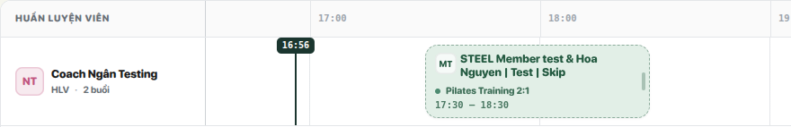
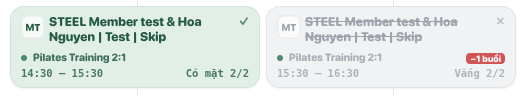
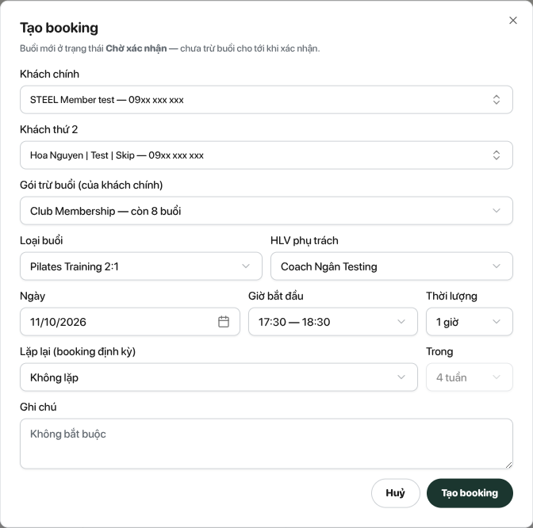
Dời buổi: mở buổi, đổi ngày/giờ hoặc HLV rồi bấm Lưu thay đổi. Hệ thống kiểm tra lại trùng giờ và gói thành viên của cả 2 khách. Đổi khách thứ 2: không đổi trực tiếp được. Huỷ buổi cũ (khi còn trước giờ tập ít nhất 2 giờ thì không trừ) rồi tạo buổi mới.
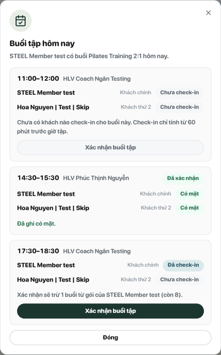
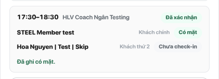
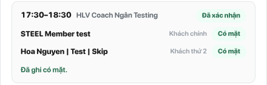
Cũng có thể xác nhận từ Lịch booking: mở buổi, bấm Xác nhận buổi tập. Nút chỉ bật khi đã có khách check-in. Chưa ai check-in thì nút bị khoá và hộp ghi "Chờ khách check-in tại quầy rồi mới xác nhận được". Consultant thấy hộp Buổi tập hôm nay nhưng không có nút xác nhận.
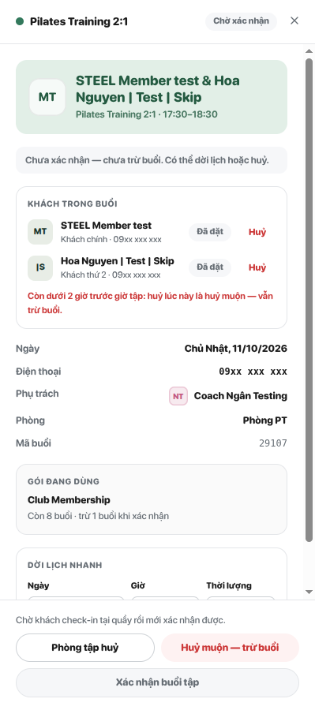
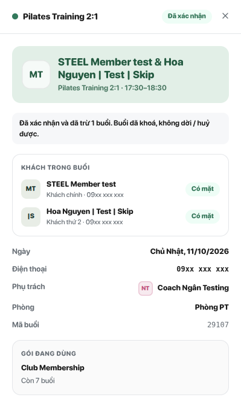
Mở buổi trên Lịch booking. Huỷ riêng 1 khách thì bấm Huỷ cạnh tên khách đó ở mục Khách trong buổi. Huỷ cả buổi thì dùng các nút cuối hộp. Nhãn nút tự đổi theo mốc 2 giờ.
| Tình huống | Bấm | Kết quả |
|---|---|---|
| 1 khách báo nghỉ, còn trước giờ tập ít nhất 2 giờ | Huỷ cạnh tên khách | Khách đó thành Huỷ. Khách còn lại vẫn tập, buổi vẫn trừ 1 khi xác nhận |
| 1 khách báo nghỉ, còn dưới 2 giờ | Huỷ cạnh tên khách | Khách đó thành Huỷ muộn. Buổi vẫn trừ 1 |
| Cả 2 khách nghỉ, còn trước giờ tập ít nhất 2 giờ | Huỷ buổi | Buổi huỷ, không trừ |
| Cả 2 khách nghỉ, còn dưới 2 giờ | Huỷ muộn — trừ buổi | Buổi huỷ muộn, trừ 1 |
| HLV nghỉ, phòng tập đóng cửa, sự cố phía phòng tập | Phòng tập huỷ | Buổi huỷ, không trừ dù sát giờ |
Huỷ muộn chỉ dùng khi lỗi ở phía khách. Lỗi ở phía phòng tập thì luôn bấm Phòng tập huỷ.
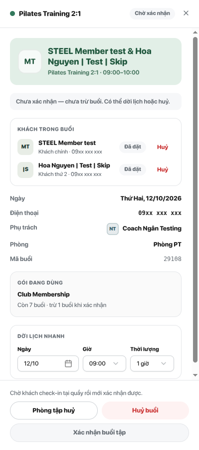
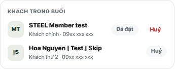
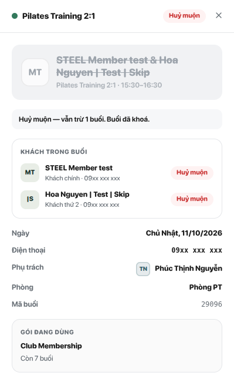
Buổi đã hết giờ mà chưa xác nhận có nhãn đỏ Chưa chốt trên lịch. Buổi này chưa trừ buổi và không có lịch sử tập. Mỗi buổi Chưa chốt, xử lý như sau:
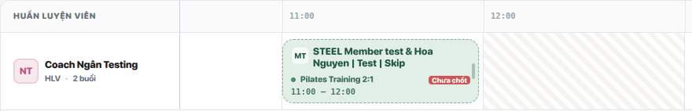
| Tình huống | Làm gì |
|---|---|
| Check-in xong mà hộp Buổi tập hôm nay không mở | Kiểm tra buổi có đúng chi nhánh, đúng ngày hôm nay, chưa bị huỷ. Có thể xác nhận từ Lịch booking |
| Khách check-in sớm hơn 60 phút | Lượt check-in đó không gắn vào buổi. Khi tới khung giờ, cho khách check-in lại |
| Khách có 2 buổi 2:1 trong ngày | Mỗi lần check-in gắn vào buổi gần nhất mà khách chưa có mặt, trong khung giờ |
| Khách check-in ở chi nhánh khác chi nhánh của buổi | Không được tính. Nếu khách tập ở chi nhánh khác thật, dời buổi sang chi nhánh đó trước khi check-in |
| Đã xác nhận rồi khách thứ 2 mới tới | Check-in bình thường trong khung giờ. Hệ thống tự ghi Có mặt, không trừ thêm |
| Khách thứ 2 bị ghi Không đến nhưng thật ra có tập | Thường do không check-in hoặc check-in ngoài khung giờ. Số buổi không đổi; chỉ ảnh hưởng lịch sử và điểm thưởng. Báo quản lý nếu cần chỉnh |
| Gói của khách chính hết buổi 2:1 trước giờ tập | Không xác nhận được. Mời khách mua thêm buổi 2:1 rồi xác nhận |
| Gói thành viên của một khách hết hạn sau khi đã đặt | Dời buổi sẽ bị chặn. Khách gia hạn gói trước, hoặc huỷ buổi |
| Xác nhận nhầm buổi | Buổi đã khoá. Không tự xoá lịch sử tập trên Directus Admin. Báo quản lý hoặc dev hoàn buổi |
| Khách huỷ trên member-app | Hệ thống tự xếp huỷ hay huỷ muộn theo mốc 2 giờ, giống như CS bấm |
| Buổi 2:1 cũ không có khách thứ 2 | Hộp ghi "Buổi không ghi nhận khách thứ 2". Dữ liệu cũ, xử lý như buổi bình thường |
| Thông báo | Nghĩa là | Làm gì |
|---|---|---|
| Buổi Pilates Training 2:1 cần đúng 1 khách thứ 2, khác khách chính | Chưa chọn khách thứ 2, hoặc chọn trùng khách chính | Chọn lại khách thứ 2 |
| Cả 2 khách của buổi 2:1 phải có gói thành viên (membership / unlimited) đang hoạt động | Một trong 2 khách không có gói thành viên đang hoạt động | Kiểm tra gói của từng khách trên trang khách hàng |
| Gói đã chọn không còn buổi cho loại buổi này | Gói của khách chính hết buổi 2:1 | Chọn gói khác của khách chính, hoặc bán thêm buổi |
| Nhân sự đã có buổi khác trong khung giờ này | HLV trùng giờ | Chọn giờ khác hoặc HLV khác |
| Khách đã có buổi khác trong khung giờ này | Khách chính hoặc khách thứ 2 đã có buổi trùng giờ | Chọn giờ khác |
| Chưa có khách nào check-in tại quầy — chưa xác nhận buổi được | Chưa ai check-in trong khung giờ | Cho khách check-in rồi xác nhận |
| Khách không thuộc buổi này hoặc đã huỷ rồi | Khách đã huỷ trước đó, hoặc người khác vừa thao tác | Tải lại trang để xem trạng thái mới |
| Buổi đã xác nhận hoặc đã huỷ thì không sửa được | Buổi đã khoá | Không cần làm gì. Nhầm thì báo quản lý |
Tab Tập luyện của trang khách giờ có giờ tập, loại buổi (PT 1:1, PT 2:1…), cột Trạng thái (Có mặt, Huỷ muộn, Không đến) và cột Tập cùng (chỉ hiện khi khách từng tập 2:1). Với khách thứ 2, cột gói ghi "Gói của <tên khách chính>" vì buổi trừ vào gói của khách chính. Dòng lịch sử cũ (trước khi áp dụng) vẫn hiện, ghi loại là PT.
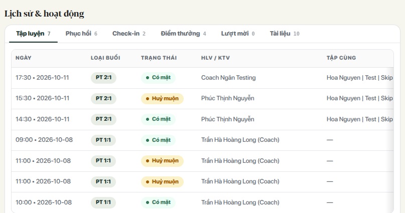
| Vai trò | Được làm |
|---|---|
| CS, OM, Admin Manager, Admin | Đặt, dời, huỷ, Phòng tập huỷ, xác nhận buổi tập |
| Consultant | Check-in khách, xem hộp Buổi tập hôm nay và lịch sử tập. Không xác nhận, không huỷ |
| Sales Support | Không cần xem lịch tập |
| HLV | Chỉ xem lịch của mình. Không điểm danh, không xác nhận |